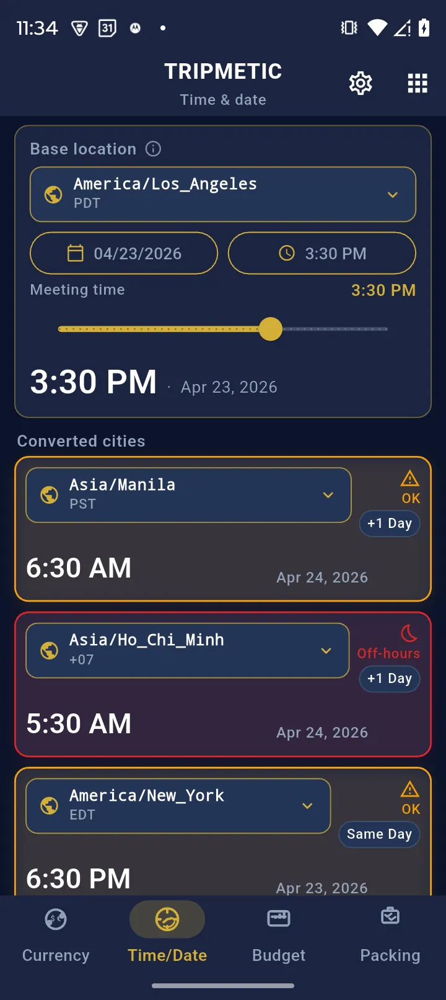
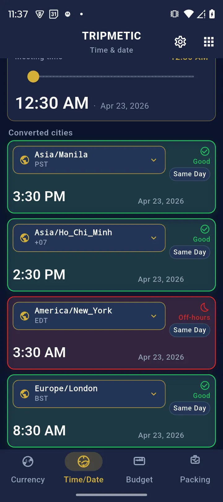
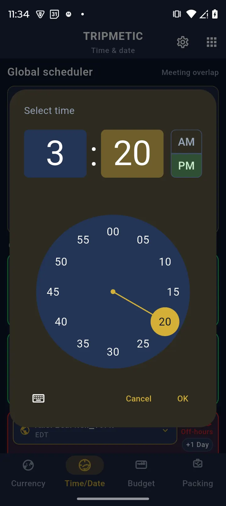
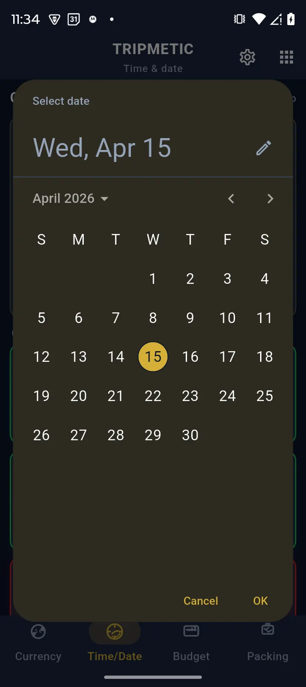

One of the largest frictions of remote work is timezone math. Trying to schedule a simple conference call between Los Angeles, London, and Tokyo usually results in frantic Google searches and someone inevitably showing up to a meeting at 3:00 AM.
The Tripmetic Global Meeting Scheduler eliminates the mental math. By utilizing a visual heatmap timeline, it allows you to instantly identify the optimal overlap for business hours across the globe. Here is how to configure it.
1 Access the Scheduler
Open the Tripmetic app, navigate to the More Tools section on your bottom navigation bar, and tap on Meeting Scheduler. You will be presented with a stacked timeline interface.

2 Set Your Base Location
The top row of the timeline represents your physical location (the "Base"). Ensure this is set to your current city. When you move the slider on this row, it acts as the anchor point, and all other timezones will shift in sync.

3 Add Participant Cities
Tap the 'Add City' button below your base location to search for the specific locations of your clients or remote team members. You can stack multiple cities on top of each other. The tool uses a color-coded heatmap: bright areas represent daytime working hours, while dark areas represent nighttime.

4 Find the Sweet Spot
Instead of doing math, simply tap and drag the timeline slider left or right. As you move the slider on your base location, the time blocks for all connected cities will update instantly. Slide until you find a vertical column where the visual blocks for all participants fall into the bright, daytime hours.

Frequently Asked Questions
Yes. The scheduler utilizes the global IANA timezone database, which automatically calculates regional DST shifts (spring forward/fall back) to ensure your meeting times are strictly accurate regardless of the time of year.
Yes. Aside from searching for highly obscure, un-cached map regions, the core logic for the Global Meeting Scheduler lives natively on your device. You can adjust sliders and check overlaps while in Airplane Mode.